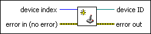

Initialize Joystick VI
Owning Palette: Input Device Control VIs
Requires: Base Development System (Linux, Windows)
Opens a reference to and initializes a joystick device at the index you specify.
(Windows) You must have DirectX 8.0 or later to use this VI.

 Add to the block diagram Add to the block diagram |
 Find on the palette Find on the palette |